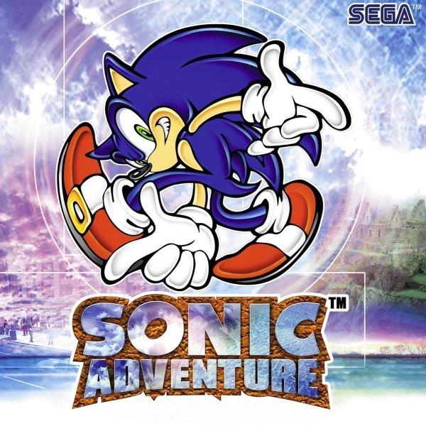
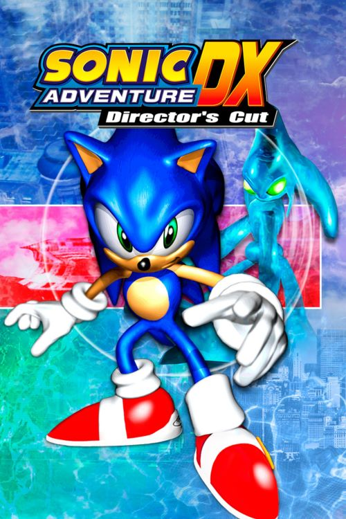

Sonic Adventure
 Sonic Adventure
is a platform video game created by SEGA. It was released in December 1998, one month after the SEGA Dreamcast was released in Japan. It became the best selling game for the Dreamcast with over 2.5 million copies released world wide. It gained a lot of populairty for being one of the first Sonic games in 3D. After the discontinuation of the SEGA Dreamcast, the spirit of the game would continue to live on with it being ported to the Nintnedo gamecube. This version of the game would be called Sonic Adventure DX which includes updated graphics and even recieved a sequel which debuted the popular character, Shadow the Hedgehog.
Sonic Adventure differentiates itself from the previous games with the titular character being noticibly older and the story taking place on Earth rather than Sonic's fictional universe where anthromorphic animals serve as the dominant species. The game begins with an unidentiable creature called Chaos attacking the city where Sonic is having a vacation. Sonic tries to stop it and learns it is a creation of his arch nemisis, Dr Robotinik (or Eggman). Sonic and his friends would have to collect the chaos emeralds to prevent Dr Robotinik from taking over the world.
| Game | Release | Type |
|---|---|---|
| Developer | Rating | Genre |
| Console | Gameplay | View | Third Person |